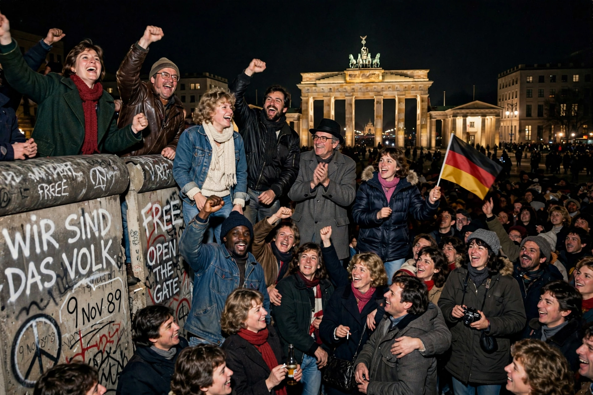

| Revolutions of 1989 | |
|---|---|
 Celebrations atop the Berlin Wall, November 1989 | |
| Date | 1989 (into 1991 for the USSR's dissolution) |
| Location | Central and Eastern Europe |
| Also known as | Fall of Nations; Autumn of Nations |
| Result | End of communist one-party states in Europe; fall of the Berlin Wall; German reunification; dissolution of the Warsaw Pact and the USSR |
The Revolutions of 1989 were a revolutionary wave of largely nonviolent political change that swept the communist states of Central and Eastern Europe in 1989, overthrowing Soviet-backed one-party regimes within months of one another. They destroyed the Iron Curtain order established after 1945, led to the reunification of Germany and the dissolution of the Warsaw Pact and (in 1991) the Soviet Union itself, and are generally considered the end of the Cold War.
By the 1980s the planned economies of the bloc were stagnating, burdened by debt, shortages, and technological lag, while their regimes faced organized opposition — Poland's Solidarity trade union, founded 1980, had ten million members before martial law drove it underground. In Moscow, Mikhail Gorbachev's glasnost and perestroika undercut the ideological confidence of party rule, and his abandonment of the Brezhnev Doctrine removed the threat of Soviet tanks that had preserved the regimes in 1953, 1956, and 1968 (the Prague Spring).
Poland led: Round Table talks in early 1989 produced semi-free elections on 4 June that Solidarity swept, and by August Tadeusz Mazowiecki headed the bloc's first non-communist government. Hungary dismantled its border fence with Austria in May and reburied the martyred 1956 premier Imre Nagy in June. In East Germany, mass emigration via Hungary and growing Leipzig Monday demonstrations forced out Erich Honecker; on 9 November a bungled press announcement opened the Berlin Wall, and crowds dismantled it. Czechoslovakia's Velvet Revolution followed within weeks, installing Václav Havel as president by year's end; Bulgaria's Todor Zhivkov fell on 10 November. Only Romania turned violent: the December revolution overthrew and executed Nicolae and Elena Ceaușescu.
Germany reunified on 3 October 1990. The Warsaw Pact dissolved in 1991, and in December 1991 the Soviet Union itself ceased to exist. The former bloc states began transitions to market economies and parliamentary democracy, many later joining NATO and the European Union. The revolutions reshaped global politics — enabling, among other things, the end of apartheid negotiations in South Africa and new conflicts in Yugoslavia — and remain a touchstone in debates about nonviolent resistance, though their economic and political legacies are contested in several countries today.